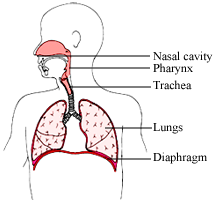

Question:1
Describe the different respiratory systems in animals with examples.
Solution:
There are different respiratory systems in animals, which include
- Skin – In some animals respiration takes place with their moist and slimy skin surface. E.g., leeches and earthworms. Amphibians respire with skin when in water and with lungs when on land. E.g., frogs, newts.
- Air holes – In insects, there are air holes or spiracles present on their body, which enable the entry of oxygen rich air and giving out carbon dioxide rich air. E.g., cockroaches
- Gills – Many aquatic animals have gills, which are made up of filaments having blood vessels or capillaries. The blood in capillaries helps to absorb oxygen in water, transports in the body and gives out carbon dioxide. E.g., Fish
- Lungs – Most mammals respire with lungs, which are sac like spongy organs in the body. E.g. ,monkeys, cats, human beings, etc.
Question:2
Differentiate between breathing and respiration.
Solution:
| Breathing |
Respiration |
| It is a physical process involving inhalation and exhalation. There is no chemical reaction but only exchange of gases. |
It is a series of chemical reactions causing oxidation of food and release of energy. |
| There are no enzymes or catalysts. |
Enzymes and catalysts are involved. |
| It occurs outside the cells. |
It occurs inside the cells. |
| Energy is not released. |
Energy is released. |
Question:3
Write one word for the following.
| 1. |
The intake of air rich in oxygen |
.................... |
| 2. |
Process of releasing energy by breakdown of food |
.................... |
| 3. |
Air holes in insects |
.................... |
| 4. |
Another name for the chest |
.................... |
| 5. |
Dome-shaped muscle in the chest cavity |
.................... |
Solution:
- Inhalation
- Respiration
- Spiracles
- Thorax
- Diaphragm
Question:4
Define the following.
1. Aerobic respiration
2. Anaerobic respiration
Solution:
- Aerobic respiration is the process of respiration that takes place in the presence of oxygen.
- Anaerobic respiration is the process of respiration that takes place in the absence of oxygen.
Question:5
Which of these allows exchange of gases?
(a) Respiration
(b) Digestion
(c) Excretion
(d) None of these
Solution:
(a) Respiration.
Respiration allows exchange of gases.
Question:6
The intake of air rich in oxygen takes place during
(a) exhalation
(b) in halation
(c) both a and b
(d) none of these
Solution:
(b) Inhalation.
During inhalation, oxygen rich air is taken in.
Question:7
Which of these is a respiratory organ of insects?
(a) Nose
(b) Spiracles
(c) Gills
(d) Lungs
Solution:
(b) Spiracles.
In insects, spiracles or air holes enables the intake of oxygen and release of carbon dioxide during respiration.
Question:8
Which of these can absorb air dissolved in water?
(a) Gills
(b) Spiracles
(c) Lungs
(d) All of these
Solution:
(a) Gills.
Aquatic animals use gills as a respiratory organ that takes in oxygen dissolved in water.
Question:9
Air is exchanged in which part of the human respiratory system?
(a) Trachea
(b) Bronchi
(c) Alveoli
(d) Larynx
Solution:
(c) Alveoli.
In humans, air exchange takes place in alveoli.
Question:10
How do unicellular organisms respire?
Solution:
Unicellular organisms, during respiration, absorb oxygen directly from the water or air and release carbon dioxide by diffusion.
Question:11
Differentiate between inhaled an exhaled air.
Solution:
| Inhaled air |
Exhaled air |
| Inhaled air is rich in oxygen, which is taken in. |
Exhaled air contains carbon dioxide, which is given out. |
| This is the taken at the beginning of the process of breathing. |
This is given out at the end of the process of breathing. |
Question:12
How do plants respire?
Solution:
Plants respire with the help of openings or tiny holes called stomata that are present on the underside of the leaves. Stomata are able to trap air containing oxygen and carbon dioxide and exchange of gases occurs within the plant cells.
Question:13
How does the diaphragm help in breathing?
Solution:
The diaphragm is a dome-shaped muscle underneath the lungs. When it contracts, oxygen rich air is pulled inside the lungs and when it relaxes, carbon dioxide is pumped out from the lungs.
Question:14
Write the chemical reaction involved in the breakdown of sugar, aerobically.
Solution:
The chemical reaction that shows the breakdown of sugar is:
Sugar + Oxygen ---------> Carbon Dioxide + Water + Energy
Question:15
Fill in the blanks with the correct words.
1. .................... (Inhalation/Exhalation) is the first step in breathing.
2. Fish absorb oxygen from water through .................... (gills/diffusion).
3. The exchange of gases at the cellular level is called .................... (breathing/respiration).
4. Plants respire through .................... (stomata/seed).
5. Respiration in the absence of oxygen is .................... (aerobic/anaerobic).
Solution:
- Inhalation is the first step in breathing.
- Fish absorb oxygen from water through gills.
- The exchange of gases at the cellular level is called respiration.
- Plants respire through stomata.
- Respiration in absence of oxygen is anaerobic.
Question:16
With the help of a labelled diagram, describe the respiratory system in humans.
Solution:

In humans, lungs are the organs of respiration, which are present inside the chest and protected by the rib cage. The ribs support the lungs and help in pumping air in and out while breathing. Underneath the lungs, there is a dome shaped muscle called diaphragm. When the diaphragm contracts, oxygen rich air is pulled inside the lungs. Exchange of gases takes place in the lungs and carbon dioxide is pumped out from the lungs when the diaphragm relaxes.
Question:17
Explain in detail how air enters and leaves the lungs.
Solution:
While inhaling, air enters the nose, travels through the nasal cavity, larynx, trachea and bronchi and enters the lungs when the diaphragm contracts. Further, air passes through the bronchioles and enters the alveoli, where exchange of gases takes place. Absorbed oxygen is taken up by the blood and carbon dioxide, which is brought from all parts of the body, is pumped out of lungs when diaphragm relaxes. On exhaling, this carbon dioxide rich air flows through the reverse route and moves out through the nose.
Question:18
How would you show that exhaled air has more carbon dioxide than inhaled air?
Solution:
Exhaled air has more carbon dioxide can be shown by an experiment requiring two disposable glasses with covers and a hole on their top, two straws and some lime water. The glasses need to be filled with lime water. Then, in first glass, air is allowed to enter through the straw and in the second glass exhaled air is blown through the straw. It is observed that lime water in first glass is only slightly milky while that in the second, it is very milky. This shows that the exhaled air has more carbon dioxide, which turned lime water more milky than the inhaled air.�
Question:19
Differentiate between aerobic and anaerobic respiration.
Solution:
| Aerobic respiration |
Anaerobic respiration |
| There is slow release of energy. |
There is sudden release of energy. |
| Energy is released in a form that can be used by the organism. |
Energy is released in a form of heat or light. |
| Energy is stored in the body in the form of (adenosine triphosphate) ATP molecules. |
Energy cannot be stored as ATP. |
Question:20
How would you demonstrate that oxygen is used up during aerobic respiration?
Solution:
Aerobic respiration uses oxygen is shown with an experiment that requires some seeds, a beaker, glass tube, round bottom glass flask, laboratory stand, KOH pellets and mercury.
Some germinating seeds are placed in the round bottom flask, which is inserted into glass tube and the tube is inverted into a beaker filled with mercury. KOH pellets are placed in glass tube to prevent seeds from absorbing carbon dioxide.
Another set up is arranged without placing KOH pellets. After a day, it is observed that mercury level rises in the tube having KOH pellets, while in other it remains unchanged. This concludes that oxygen is used up by the seeds during aerobic respiration, which lowered the pressure in the bulb and raised mercury level in the tube.